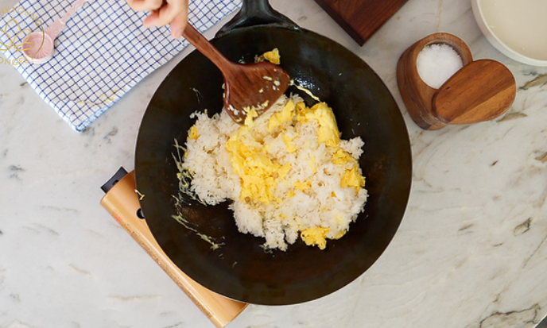

Step 1: Gather Ingredients
You will need day-old cooked rice, eggs, soy sauce, garlic, green onions, and cooking oil.
DO NOT USE OLIVE OIL!
Step 3: Sauté Garlic & Rice
Add garlic to the pan, then mix in the cooked rice and scrambled egg, then stir-fry for a couple of minutes.
Optional: Use fire and a wok to have wok hei. It makes it more flavorful.
Step 4: Season & Toss
Add the soy sauce, MSG, and salt to taste in the pan, then toss and mix well.
Optional: You can add vegetables. (But vegetables taste like sad anyway T ^ T)
Step 5: Plate and Serve!
Place the egg fried rice in a bowl, garnish it with spring onions, then serve!
CONGRATULATIONS!
You have created a simple fried rice!